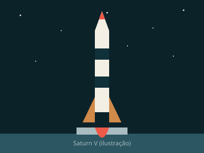

MATEMÁTICA · COMPUTAÇÃO
Katherine Johnson
Seus cálculos matemáticos foram fundamentais para missões espaciais da NASA.
História em breveMargaret Hamilton liderou a equipe responsável pelo software de voo das missões Apollo.
Mulheres que mudaram a ciência
Esta é a história de Margaret Hamilton, uma das muitas mulheres que transformaram a ciência. Começamos pela engenheira que ajudou a levar a Apollo 11 à Lua — e novas histórias incríveis estão a caminho.
Muito além do código
A chegada à Lua não dependeu apenas de foguetes. Também precisou de pessoas capazes de imaginar problemas antes que eles acontecessem.
A missão por dentro
Começamos com Margaret Hamilton e seu papel na Apollo 11. Esta é apenas uma das histórias que queremos contar sobre mulheres que mudaram o mundo com ciência, criatividade e coragem.

Década de 1960
Para levar astronautas à Lua e trazê-los de volta com segurança, a NASA precisava de foguetes, equipamentos e um sistema de software confiável.
A exploração espacial também depende de decisões tomadas em linhas de código.
Dica: você também pode usar as setas do teclado.
Uma coleção em expansão
A história de Margaret é só o começo. Em breve, novas trajetórias vão ganhar espaço por aqui — de matemáticas e programadoras a pesquisadoras que transformaram a medicina, a física e a astronomia.
MATEMÁTICA · COMPUTAÇÃO
Seus cálculos matemáticos foram fundamentais para missões espaciais da NASA.
História em brevePROGRAMAÇÃO
Uma pioneira que imaginou possibilidades para máquinas muito antes dos computadores modernos.
História em breveFÍSICA · QUÍMICA
Pesquisadora pioneira no estudo da radioatividade e a primeira pessoa a ganhar dois prêmios Nobel em áreas científicas distintas.
História em breveBIOLOGIA · CRISTALOGRAFIA
Seu trabalho com difração de raios X contribuiu para revelar a estrutura do DNA.
História em breveCOMPUTAÇÃO · ASTRONOMIA
Matemática e liderança, ajudou a abrir caminhos para mulheres negras na computação da NASA.
História em breveFÍSICA
Física experimental cujas pesquisas mudaram a compreensão de princípios fundamentais da física.
História em breveEstas cientistas são algumas das inspirações para os próximos capítulos. A coleção vai crescer com novas histórias e descobertas.
Ideias que ficam
A trajetória de Margaret é um exemplo de como diferentes mulheres transformam a ciência. Na computação, pensar adiante, priorizar o essencial e construir em equipe pode fazer toda a diferença.
Imaginar situações inesperadas e planejar respostas antes que elas aconteçam.
Quando os recursos são limitados, tarefas críticas precisam receber atenção primeiro.
Grandes conquistas são resultado de colaboração entre muitas pessoas e especialidades.
Aprender fazendo
Você está no controle de um sistema com recursos limitados. Execute as tarefas e mantenha o foco no que é prioritário.
Dica: o jogo pode pedir que você gire o celular para jogar melhor. Se ele não aparecer dentro desta página, use o botão “Abrir jogo em nova aba”.
Sua voz importa
Tem uma cientista para indicar ou uma ideia para deixar o projeto ainda melhor? Vamos adorar saber.